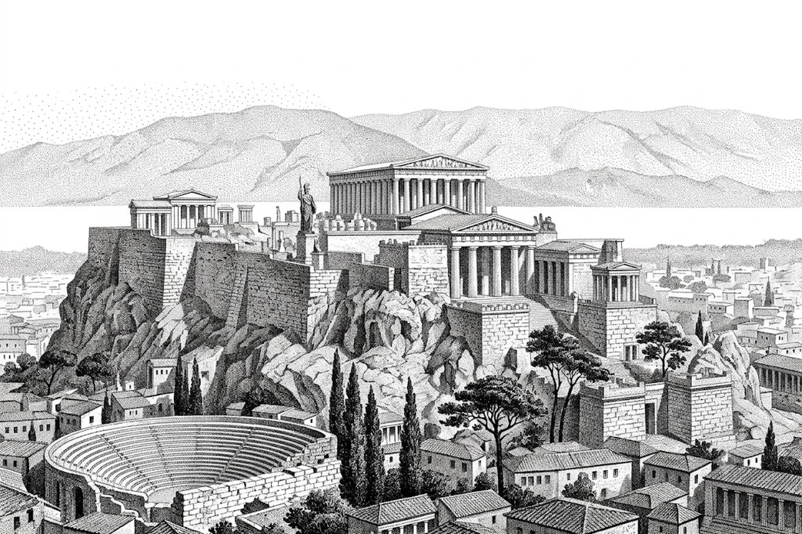

The one file to open first
SUMMARY.md: company identifiers, the latest year's numbers, revenue and EPS history, the risk-diff headline, and an index of everything else.

Give it a ticker. Get every Item as its own file, the as-filed statements, ten years of financials, and a diff of this year's risks against last year's.
./run_10k.sh AAPL
Runs locally in your terminal — no signup, no server.
SUMMARY.md: company identifiers, the latest year's numbers, revenue and EPS history, the risk-diff headline, and an index of everything else.
sections/: business, risk factors, MD&A, legal proceedings, market risk, financial statements — each one its own file, so you read the section instead of the whole document.
statements/: income statement, balance sheet, cash flow and equity, taken from the filing itself rather than a vendor's normalisation. Markdown and JSON.
trends.md: margins, free cash flow, ROE, CAGR and share count across a decade, plus a note on which XBRL concepts fed each row and which were tried and not found.
risk_diff.md: risks added, removed and reworded against last year. Every added risk prints beside its closest dropped counterpart with a similarity score, and a wholesale rewrite gets flagged at the top.
Everything comes from SEC EDGAR. A full extraction is about twelve requests and fifteen seconds cold, then instant — filings are immutable once accepted, so the cache never expires.
The tool extracts and structures, nothing else. Reading is yours to do, or your agent's, with the source text sitting right there to check against.
Banks have no gross profit line. Berkshire doesn't tag diluted EPS undimensioned. A blank stays blank and the file says what was tried, rather than quietly substituting something close.